configuracion y folio_secuencia no se relacionan con otras tablas: las consulta el proceso de cobro.Sistema de información de escritorio para socios, planes, cobro de membresías y control de vigencias, sobre PostgreSQL 16
Un gimnasio de barrio vende membresías por periodo: una visita, una semana, un mes, un trimestre, un semestre o un año. En el mostrador se atiende a cada socio que llega, se le cobra su plan y se le dice hasta cuándo puede entrar. Sin un sistema, esa información vive en libretas u hojas de cálculo: no se sabe con certeza quién está al corriente, a quién se le acaba la membresía esta semana ni cuánto se cobró en el día, y cada renovación obliga a calcular a mano desde qué fecha cuenta el nuevo periodo.
El gimnasio necesita registrar a sus socios y sus planes, cobrar cada membresía con un folio consecutivo y un recibo, y consultar en cualquier momento el estado de cada socio: si su membresía está vigente, por vencer, vencida o si ya causó baja por falta de renovación. También necesita saber cuánto se cobró en el día y quién lo cobró, y conservar el historial completo de pagos aunque cambien los precios o los planes.
Gym Desk atiende esa necesidad con una aplicación de escritorio conectada a PostgreSQL. La base de datos guarda los socios, los planes, los métodos de pago, los usuarios, cada pago y la membresía que generó; el estado de cada socio no se guarda, se calcula a partir de sus membresías y de los plazos configurados, de modo que siempre está al día.
| Rol | Quién es | Qué registra o consulta |
|---|---|---|
| Administrador | Dueño o encargado del gimnasio | Todo: tablero, cobros, socios, planes y precios, métodos de pago, cuentas de usuario y configuración (nombre, logotipo, plazos, moneda y folio). |
| Recepción | Personal del mostrador | Tablero de vigencias, cobro de membresías y catálogo de socios (registrar, corregir y eliminar). |
| Caja | Personal que solo cobra | Cobro de membresías y consulta de socios. |
Desarrollar un sistema de información de escritorio, conectado a una base de datos relacional en PostgreSQL 16, que administre los socios, los planes y los métodos de pago de un gimnasio, registre el cobro de membresías con folio y recibo, y permita controlar la vigencia de cada socio a partir de sus pagos.
| ID | Objetivo | Verificación |
|---|---|---|
| OE1 | Diseñar e implementar un modelo relacional de 8 tablas en tercera forma normal, con claves primarias y foráneas, NOT NULL, UNIQUE, CHECK y DEFAULT. | sql/01_esquema.sql, diagrama (Figura 2) y diccionario (Anexo A). |
| OE2 | Ofrecer CRUD completo y persistente de tres catálogos: socios, planes de membresía y métodos de pago (más el de usuarios). | Pantallas de la sección 7 y pruebas PR04–PR17. |
| OE3 | Registrar el cobro de una membresía en una sola transacción: pago, membresía y folio, con el periodo y el tipo de cobro calculados por el sistema. | Módulo M01 (7.6), evidencia E1 y pruebas PR18–PR21. |
| OE4 | Mostrar el control de vigencias del día (activos, por vencer, vencidos, ingresos) con el mismo cálculo de estado que la función fn_estado_socio. | Módulo M02 (7.7) y pruebas PR22–PR24. |
| OE5 | Resolver necesidades del sistema con 13 consultas (5 con WHERE, 2 con funciones de PostgreSQL, 3 con JOIN y 3 con subconsultas), 3 funciones propias, 1 procedimiento almacenado y 1 trigger. | Matriz de evidencias (8.1) y Anexos B a D. |
| OE6 | Permitir reconstruir la base y verificar el sistema en otro equipo con scripts numerados, datos de prueba y pruebas automatizadas. | Sección 10 y 693 pruebas automatizadas (9.1). |
| ID | Componente | Operaciones principales | Tablas |
|---|---|---|---|
| C01 | Catálogo de socios | Registrar, consultar (buscar y filtrar por estado), modificar y eliminar. | socio |
| C02 | Catálogo de métodos de pago | Registrar, consultar, modificar, activar o desactivar y eliminar. | metodo_pago |
| C03 | Catálogo de planes de membresía | Registrar, consultar, modificar, activar o desactivar y eliminar, con el ahorro frente al plan mensual. | plan_membresia |
| C04 | Catálogo de usuarios (adicional) | Registrar, consultar, modificar, activar o desactivar y eliminar cuentas con su rol. | usuario |
| M01 | Cobro de membresías | Elegir socio, plan y método; calcular periodo, tipo de cobro, total y cambio; registrar pago, membresía y folio; emitir el recibo. | pago, membresia, socio, plan_membresia, metodo_pago, usuario, folio_secuencia, configuracion |
| M02 | Control de vigencias (tablero) | Socios activos, por vencer, vencidos con su día de baja, cobrado hoy y últimos cobros; abrir el cobro de un socio desde la lista. | socio, membresia, pago, plan_membresia, configuracion |
Productos, ventas de mostrador e inventario se descartaron del proyecto final: sus tablas se retiraron con la migración V5__alcance_proyecto.sql antes de capturar datos. Tampoco forman parte de esta versión el control de asistencia (entradas al gimnasio), la impresión en una impresora física (el recibo se genera como archivo de texto) ni la ficha histórica detallada de cada socio.
| ID | Requerimiento | Componente |
|---|---|---|
| RF01 | Iniciar sesión con usuario y contraseña; el menú muestra solo las secciones del rol. | Acceso |
| RF02 | Registrar socios con nombre, teléfono, correo opcional y fecha de alta. | C01 |
| RF03 | Buscar socios por nombre (sin distinguir mayúsculas ni acentos), correo o teléfono, y filtrarlos por estado. | C01 |
| RF04 | Corregir los datos de un socio y eliminar un socio sin cobros. | C01 |
| RF05 | Administrar métodos de pago, indicando cuáles son efectivo. | C02 |
| RF06 | Administrar planes con duración, precio y plan mensual de referencia, y mostrar el ahorro de cada uno. | C03 |
| RF07 | Administrar cuentas de usuario con su rol y contraseña. | C04 |
| RF08 | Cobrar una membresía mostrando antes el periodo, el tipo de cobro, el total y el cambio. | M01 |
| RF09 | Asignar un folio consecutivo a cada cobro y emitir su recibo. | M01 |
| RF10 | Mostrar socios activos, por vencer (y cuántos vencen en la semana), vencidos con su día de baja, lo cobrado hoy y los últimos cobros. | M02 |
| RF11 | Abrir el cobro de un socio desde el tablero o desde la búsqueda del encabezado. | M01, M02 |
| RF12 | Configurar nombre, dirección, teléfono, logotipo y leyenda del recibo, días de aviso, días para la baja, moneda y prefijo de folio. | Configuración |
| RF13 | Avisar si la base de datos no responde al arrancar y permitir reintentar. | Integración |
Cada regla se cumple en la base de datos (restricción, función o trigger), en la aplicación (caso de uso) o en ambas. Las de la aplicación responden con un mensaje que indica qué corregir.
| ID | Regla | Entidad o proceso | Dónde se cumple |
|---|---|---|---|
| RN01 | El estado de un socio se calcula con su último vencimiento: sin membresías, Sin membresía; si faltan más días que dias_aviso, Vigente; si faltan de 0 a dias_aviso, Por vencer; si venció hace menos de dias_baja_automatica días, Vencida; si no, Baja. | Socio, M02 | App (MembershipRules) y BD (fn_estado_socio) |
| RN02 | Se cobra siempre el precio del plan; el monto no se captura. | M01 | App y procedimiento |
| RN03 | El tipo de cobro depende del estado al cobrar: primera (sin membresías), renovación anticipada (vigente o por vencer), renovación vencida (vencida) o reactivación (en baja). | M01, pago.tipo_cobro | App y procedimiento |
| RN04 | La renovación anticipada empieza cuando termina la vigencia actual (no se pierden días); la vencida y la reactivación empiezan el día del cobro; la primera empieza hoy o en la fecha elegida, nunca antes del alta. | M01, membresia | App y procedimiento |
| RN05 | El vencimiento es el inicio más la duración del plan, y siempre es posterior al inicio. | membresia | BD (CHECK, fn_fecha_vencimiento) y app |
| RN06 | Con un método de efectivo, el efectivo recibido es obligatorio y no puede ser menor al total; el cambio es la diferencia. | M01, pago | BD (CHECK efectivo_recibido >= monto) y app |
| RN07 | Solo se ofrecen al cobrar los planes y métodos de pago activos. | M01 | App |
| RN08 | Cada cobro recibe el siguiente folio de la serie (prefijo y ancho configurables, por ejemplo GYM-0007); se asigna al confirmar, dentro de la misma transacción. | folio_secuencia, pago.folio | BD (UNIQUE) y app |
| RN09 | Una misma operación no se cobra dos veces (doble clic o reintento). | pago.operacion_id | BD (UNIQUE) y app |
| RN10 | Los cobros y las membresías no se borran: son el historial. | pago, membresia | BD (triggers) |
| RN11 | Una membresía pertenece al mismo socio que hizo el pago. | membresia | BD (clave foránea compuesta) |
| RN12 | Socio: nombre de 3 letras o más y hasta 100 caracteres; teléfono de 10 dígitos; correo con formato válido y sin repetirse (sin distinguir mayúsculas); alta no posterior a hoy ni a su primera membresía. | C01, socio | BD (CHECK, índice único) y app |
| RN13 | Un socio con cobros no se elimina; conserva su historial. | C01 | BD (claves foráneas sin cascada) y app |
| RN14 | Plan: nombre único, duración de 1 a 730 días, precio mayor que cero y, si tiene referencia mensual, un plan de 30 días distinto de sí mismo. | C03, plan_membresia | BD (CHECK, índice único) y app |
| RN15 | Un plan con membresías o que es referencia de otros no se elimina: se desactiva. | C03 | BD y app |
| RN16 | Ahorro de un plan: meses equivalentes (365 días = 12; múltiplos de 30 = días ÷ 30) por el precio de la referencia, menos el precio del plan; el porcentaje se redondea. | C03 | App (PlanSavings) |
| RN17 | Método de pago: nombre único; uno usado en cobros no se elimina; debe quedar al menos uno activo. | C02 | BD y app |
| RN18 | Usuario: nombre de usuario único de 3 a 20 caracteres (minúsculas, números, punto o guion); contraseña de 8 caracteres o más, guardada solo como hash Argon2id. | C04, usuario | BD (índice único) y app |
| RN19 | Debe quedar al menos un administrador activo; nadie se desactiva ni se elimina a sí mismo; un usuario con cobros no se elimina. | C04 | App (en transacción) |
| RN20 | Cada rol solo puede hacer lo que su permiso indica (Tabla 1); la aplicación lo revisa en cada operación, no solo en el menú. | Todas | App (Authorizer) |
| RN21 | Configuración: una sola fila; días de aviso de 1 a 60; días para la baja de 1 a 365; prefijo de 1 a 8 mayúsculas, números o guiones; la moneda no cambia si ya hay cobros. | configuracion | BD (CHECK) y app |
La aplicación sigue una arquitectura por capas (hexagonal): la interfaz no conoce la base de datos y los casos de uso no conocen JavaFX. Así cada regla vive en un solo lugar y se puede probar sin pantalla ni base.
ui/): pantallas en JavaFX y su ViewModel, que guarda el estado y reparte los errores de cada campo. Toda consulta corre fuera del hilo de la interfaz (Background), así la ventana no se congela.application/): un caso de uso por operación (por ejemplo ChargeMembership o SearchMembers). Revisa el permiso del rol con Authorizer, valida y devuelve todos los errores juntos.domain/): reglas puras, como el estado del socio y el inicio de una renovación (MembershipRules), el ahorro (PlanSavings) o el dinero (Money, con BigDecimal).infrastructure/): repositorios con SQL explícito (JDBI) sobre las tablas, el pool de conexiones, las migraciones y el cifrado de contraseñas.| Elemento | Tecnología | Uso |
|---|---|---|
| Lenguaje | Java 25 (Maven Wrapper) | Aplicación y pruebas. |
| Interfaz | JavaFX 21.0.6 | Ventana, pantallas y diálogos; temas claro y nocturno. |
| Base de datos | PostgreSQL 16 en Docker (docker-compose.yml) | Datos, restricciones, funciones, procedimiento y triggers. |
| Conexión | Controlador JDBC de PostgreSQL 42.7.4 y HikariCP 6.2.1 | Conexiones reutilizables (pool de 5). |
| Acceso a datos | JDBI 3.47.0 | Consultas SQL escritas a mano con parámetros (:nombre), sin SQL armado con texto. |
| Migraciones | Flyway 11.1.0 | Crea y actualiza la base al arrancar (V1 a V6). |
| Contraseñas | argon2-jvm 2.11 (Argon2id) | Solo se guarda el hash. |
| Registros | SLF4J 2 y Logback 1.5.38 | Errores inesperados en ~/.gym-desk/logs. |
| Pruebas | JUnit 5.12.1 y Testcontainers 1.21.4 | Pruebas por capa; las de persistencia levantan su propio PostgreSQL 16. |
La aplicación lee la conexión de tres variables, DB_URL, DB_USER y DB_PASSWORD, desde las variables del sistema o desde un archivo .env en la carpeta del proyecto. El .env no se sube al repositorio: así la contraseña de la base nunca queda publicada. docker-compose.yml lee el mismo archivo y publica el puerto 5432 solo en 127.0.0.1, de modo que otros equipos de la red no pueden conectarse.
Al arrancar, la aplicación abre el pool (HikariCP falla de inmediato si la base no responde), aplica con Flyway las migraciones pendientes y, si la base no tiene usuarios, crea el primer administrador con ADMIN_USERNAME y ADMIN_PASSWORD. Si algo falla, la pantalla de arranque muestra la causa y permite reintentar (Figura 3). Las operaciones que escriben corren en una transacción SERIALIZABLE que se reintenta si PostgreSQL detecta un conflicto con otra estación.
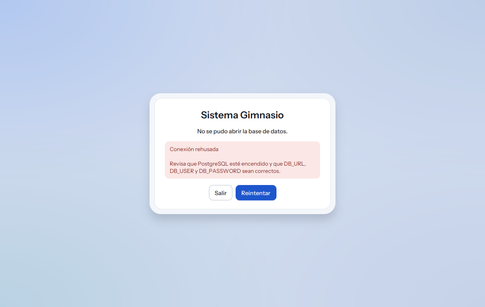
PreviewMembershipCharge el periodo, el tipo de cobro, el total y el cambio, sin guardar nada.ChargeMembership revisa el permiso, abre una transacción y vuelve a leer al socio, el plan, el método y la configuración (no confía en lo que mostraba la pantalla).folio_secuencia e inserta el pago y su membresia.Las contraseñas se guardan como hash Argon2id y el acceso responde en el mismo tiempo exista o no el usuario, para no revelar qué cuentas existen. Cada caso de uso revisa el permiso del rol (Tabla 1) antes de leer o escribir; el menú solo oculta lo que el rol no puede usar. Un cambio de rol o una desactivación se aplica en la siguiente operación de esa persona. Las consultas usan parámetros, nunca texto concatenado, lo que evita la inyección de SQL.
El diagrama se genera a partir de la base real (scripts/docs/generar-diagrama.sh): levanta un PostgreSQL temporal, aplica las migraciones y dibuja lo que encuentra en el catálogo, así que corresponde siempre con los scripts. Por su tamaño ocupa la siguiente página, en horizontal (Figura 2).
configuracion y folio_secuencia no se relacionan con otras tablas: las consulta el proceso de cobro.Notación: negrita, clave primaria; cursiva, clave foránea.
| Tabla | Atributos | Referencia | Cardinalidad |
|---|---|---|---|
| PAGO | socio_id | SOCIO(id) | Un socio tiene cero o muchos pagos (1:N). |
| PAGO | usuario_id | USUARIO(id) | Un usuario registra cero o muchos pagos (1:N). |
| PAGO | metodo_pago_id | METODO_PAGO(id) | Un método se usa en cero o muchos pagos (1:N). |
| MEMBRESIA | plan_id | PLAN_MEMBRESIA(id) | Un plan está en cero o muchas membresías (1:N). |
| MEMBRESIA | (pago_id, socio_id) | PAGO(id, socio_id) | Cada pago genera exactamente una membresía (1:1), del mismo socio. |
| PLAN_MEMBRESIA | referencia_mensual_id | PLAN_MEMBRESIA(id) | Un plan mensual es referencia de cero o muchos planes (1:N, opcional, recursiva). |
La relación muchos a muchos entre SOCIO y PLAN_MEMBRESIA (un socio contrata varios planes a lo largo del tiempo y un plan lo contratan muchos socios) se resuelve con la tabla asociativa MEMBRESIA, que además guarda el periodo de cada contratación. membresia.socio_id no apunta directamente a SOCIO: llega por la clave compuesta hacia PAGO, lo que obliga a que la membresía sea del mismo socio que pagó (RN11). Ninguna clave foránea borra en cascada.
| Tabla | Clave alterna | Implementación |
|---|---|---|
| USUARIO | nombre de usuario sin distinguir mayúsculas | Índice único sobre lower(nombre_usuario) |
| PLAN_MEMBRESIA, METODO_PAGO | nombre sin distinguir mayúsculas | Índice único sobre lower(nombre) |
| SOCIO | correo, solo entre los que tienen | Índice único parcial sobre lower(correo) |
| PAGO | folio; operacion_id | UNIQUE |
| MEMBRESIA | pago_id | UNIQUE |
| Tipo | Restricciones |
|---|---|
| Dominio | Teléfono de 10 dígitos; duración de 1 a 730; precio mayor que 0; monto no negativo; días de aviso de 1 a 60; días para la baja de 1 a 365; prefijo de folio de 1 a 8 mayúsculas, números o guiones; rol y tipo_cobro como tipos enumerados. |
| Tupla | Vencimiento posterior al inicio; efectivo recibido no menor al monto; un plan no es su propia referencia. |
| Relación | CONFIGURACION tiene una sola fila (CHECK (id = 1)). |
| Operación | pago y membresia no admiten DELETE (triggers). |
| Valores por defecto | activo = true, moneda = 'MXN', dias_aviso = 7, dias_baja_automatica = 30, ancho = 4, fecha_hora = now(), claves generadas con GENERATED ALWAYS AS IDENTITY. |
Las relaciones están en tercera forma normal: cada atributo no clave depende solo de la clave completa. pago.monto no es redundante: guarda el precio del plan en el momento del cobro, que puede cambiar después. pago.tipo_cobro tampoco: es lo que fue el cobro en su momento. El estado del socio no se guarda: se calcula con sus membresías y los plazos de configuracion. Guardarlo obligaría a actualizarlo cada día con un proceso programado, y cambiar el plazo de baja no recalcularía el pasado.
El diccionario completo, con nombre, tipo, nulo, clave, valor predeterminado, restricciones y significado de cada atributo de las 8 tablas y los 2 tipos enumerados, está en el Anexo A. Se genera a partir de los comentarios (COMMENT ON) y del catálogo de la base, así que corresponde con el esquema.
| # | Archivo | Contenido |
|---|---|---|
| 1 | 01_esquema.sql | Tipos enumerados, 8 tablas con sus restricciones, índices y comentarios (diccionario). |
| 2 | 02_datos.sql | Datos de prueba: 4 usuarios, 4 métodos de pago, 6 planes, 12 socios y 14 cobros con sus membresías, en todos los estados. |
| 3 | 03_consultas.sql | 13 consultas del sistema (Q01–Q13). |
| 4 | 04_funciones.sql | Funciones F01–F03, la función del trigger y los triggers T01. |
| 5 | 05_procedimientos.sql | Procedimiento P01 sp_registrar_cobro. |
| 6 | 06_pruebas.sql | Usa las funciones y el procedimiento con los datos de prueba; lo que modifica se deshace al final. |
El orden importa: 02 necesita las tablas de 01, y 06 usa los objetos de 04 y 05. sql/crear-base.sh crea la base gimnasio_proyecto desde cero y corre los seis archivos en orden; en otro sistema basta con psql -f en ese mismo orden (sección 10.4).
| Decisión | Cómo se implementó | Por qué |
|---|---|---|
| Los importes no pierden centavos | numeric(12,2), nunca float | Los decimales binarios redondean mal el dinero. |
| Los catálogos se desactivan en vez de borrarse | activo boolean DEFAULT true y claves foráneas sin cascada | Un plan o método usado sigue apareciendo en los recibos anteriores. |
| El historial de cobros es inalterable | Triggers BEFORE DELETE en pago y membresia | Un borrado accidental no puede hacer desaparecer dinero cobrado. |
| La membresía es del socio que pagó | Clave foránea compuesta (pago_id, socio_id) hacia pago(id, socio_id) | Sin ella, una membresía podría quedar a nombre de otro socio. |
| Un cobro no se duplica | operacion_id UNIQUE, generado por la pantalla al abrir el cobro | Un doble clic o un reintento tras un error de red no cobra dos veces. |
| Folios consecutivos sin huecos por concurrencia | Tabla folio_secuencia actualizada en la misma transacción SERIALIZABLE que el pago | Una secuencia de PostgreSQL deja huecos si la transacción se deshace. |
| Unicidad sin distinguir mayúsculas | Índices únicos sobre lower(...) | «Ana@gym.mx» y «ana@gym.mx» son el mismo correo. |
| Fechas con zona horaria en los cobros | timestamptz en pago.fecha_hora; date en vigencias | La hora del cobro es un instante; la vigencia es un día de calendario. |
02_datos.sql carga datos suficientes para comprobar el CRUD, las relaciones, los filtros, los JOIN, las subconsultas, las funciones y el procedimiento. Las fechas son relativas a CURRENT_DATE, de modo que los estados se conservan sin importar el día en que se carguen: hay socios vigentes, por vencer, vencidos, en baja y sin membresía, cobros en efectivo y con tarjeta, un plan y un método inactivos y un usuario desactivado.
Para demostrar la aplicación hay una base aparte, gimnasio_demo, que crea scripts/demo/crear-demo.sh con las migraciones de la app, las cuentas que se escriban al correrlo y scripts/demo/datos-demo.sql: 23 socios, 8 planes, 4 métodos y 25 cobros, 3 de ellos del día. Ese archivo se niega a cargarse en una base que no sea de demostración o que ya tenga cobros, porque los cobros no se pueden borrar.
La aplicación crea su propia base con migraciones de Flyway (src/main/resources/db/migration): V1 a V5 equivalen a 01_esquema.sql, y V6 contiene 04_funciones.sql y 05_procedimientos.sql tal cual. La prueba SqlScriptsTest construye las dos bases y compara columnas, restricciones, índices, enumerados, funciones y triggers; si alguien cambia un camino sin el otro, la prueba falla. Así los scripts entregados describen exactamente la base que usa la aplicación.
Las capturas de esta sección son de la aplicación real conectada a PostgreSQL con los datos de demostración. Las tomó la prueba ReporteCapturasTest, que después de cada operación consultó la base para comprobar que se guardó (Anexo E).
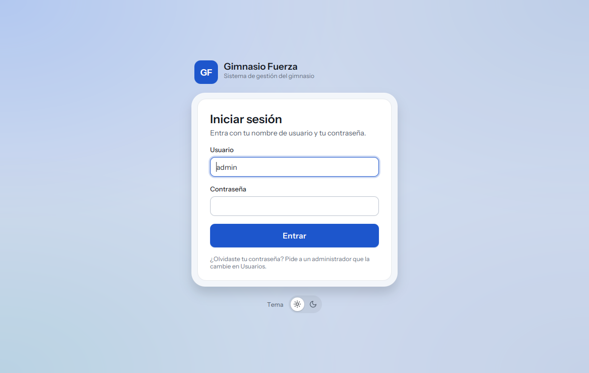
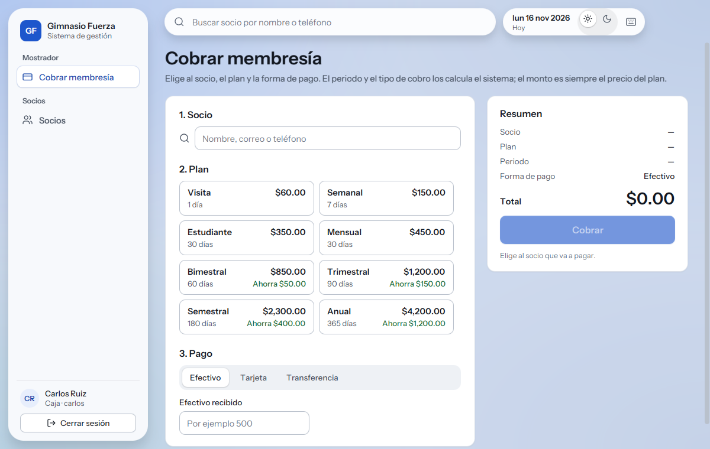
| Operación | Cómo se hace | Caso de uso |
|---|---|---|
| Registrar | «Registrar socio»: nombre, teléfono, correo opcional y fecha de alta (propone hoy). Los errores aparecen en su campo. | RegisterMember |
| Consultar | Buscador por nombre (sin mayúsculas ni acentos), correo o teléfono; filtro por estado con la cuenta de cada uno; vigencia y plan de cada socio. | SearchMembers |
| Modificar | «Editar» en la fila: corrige los datos personales; la membresía solo cambia con un cobro. | UpdateMember |
| Eliminar | «Eliminar» con confirmación; un socio con cobros se rechaza (RN13). | DeleteMember |
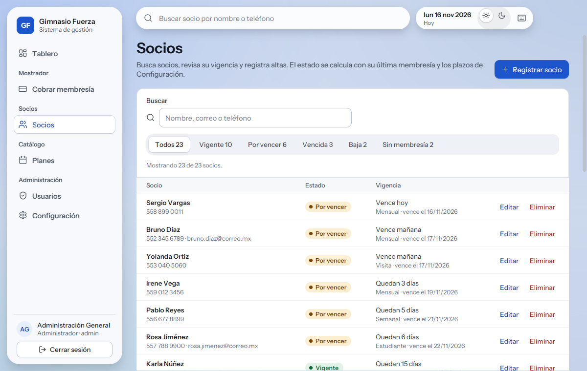
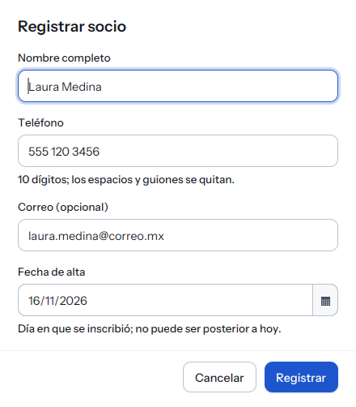
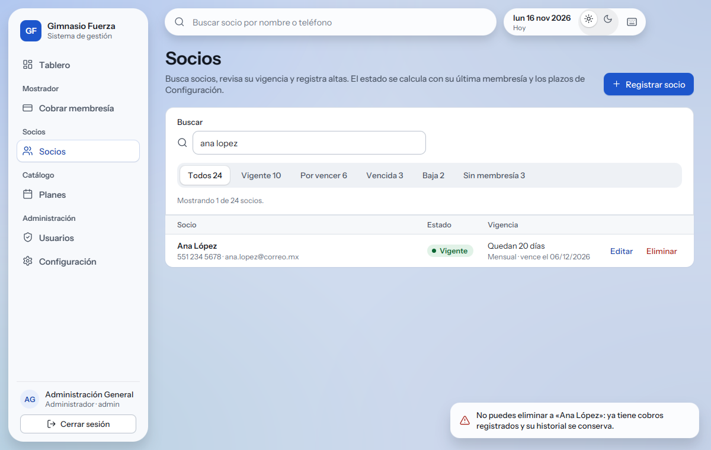
Está en Configuración, en su propio panel, porque cada cambio se guarda al momento. Se puede agregar y editar (nombre y si es efectivo), consultar la lista con su estado, activar o desactivar y eliminar uno que nunca se usó. Los efectivos piden el efectivo recibido al cobrar y calculan el cambio. Debe quedar al menos un método activo (RN17).
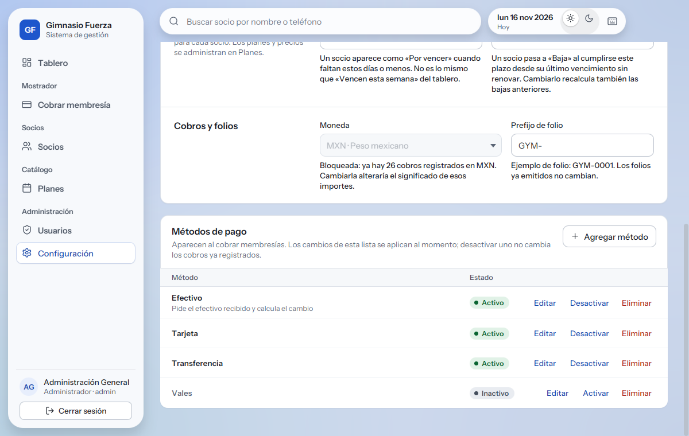
Se pueden agregar y editar planes (nombre, duración, precio y plan mensual de referencia), consultarlos con su ahorro, activarlos o desactivarlos y eliminar uno que nadie ha pagado ni usa como referencia (RN15). Cambiar el precio aplica a los cobros nuevos: los anteriores conservan lo pagado.
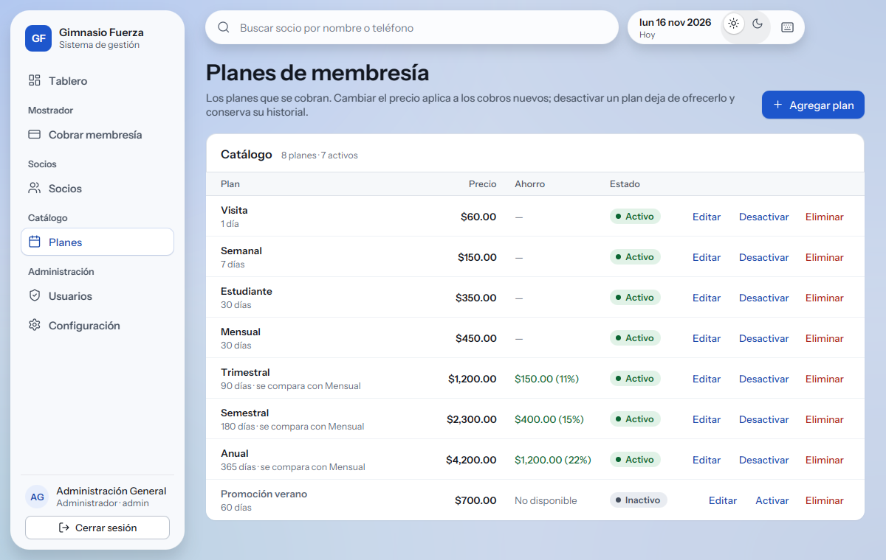
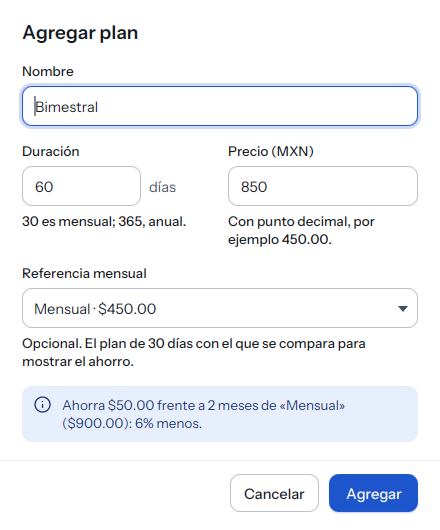
Es un catálogo adicional a los tres que pide la guía. Solo lo ve el administrador. Se pueden agregar y editar cuentas (nombre, usuario, rol y contraseña; al editar, la contraseña vacía conserva la actual), consultarlas, activarlas o desactivarlas y eliminar una que nunca registró cobros. La propia cuenta no ofrece desactivar ni eliminar (RN19). La matriz de permisos sale del mismo dato que decide el menú.
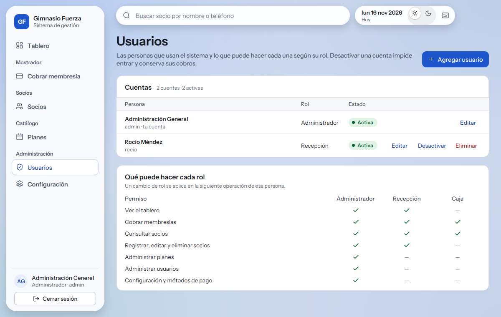
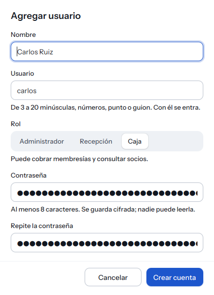
| Entradas | Socio, plan, método de pago, efectivo recibido (si el método es efectivo) e inicio (solo en la primera membresía). Un identificador de operación generado al abrir el formulario. |
|---|---|
| Tablas | Lee socio, membresia (la última del socio), plan_membresia, metodo_pago, configuracion y usuario; actualiza folio_secuencia; inserta en pago y membresia. |
| Reglas | RN02 a RN09 y RN20: precio del plan, tipo de cobro, inicio de la vigencia, efectivo suficiente, solo planes y métodos activos, folio consecutivo, operación única y permiso de cobro. |
| Resultados | Pago con folio, membresía con su periodo y recibo (fecha y hora, socio, plan, periodo, método, monto, recibido, cambio y quién atendió), que puede guardarse como archivo de texto. |
La pantalla calcula todo antes de cobrar: el resumen de la derecha muestra el periodo, la regla aplicada, el total y el cambio o lo que falta, y «Cobrar» solo se habilita cuando todo está completo. Un segundo clic mientras cobra no cobra dos veces. El socio puede elegirse en el buscador de la pantalla, desde la búsqueda del encabezado (Figura 14) o desde el tablero (sección 7.7).
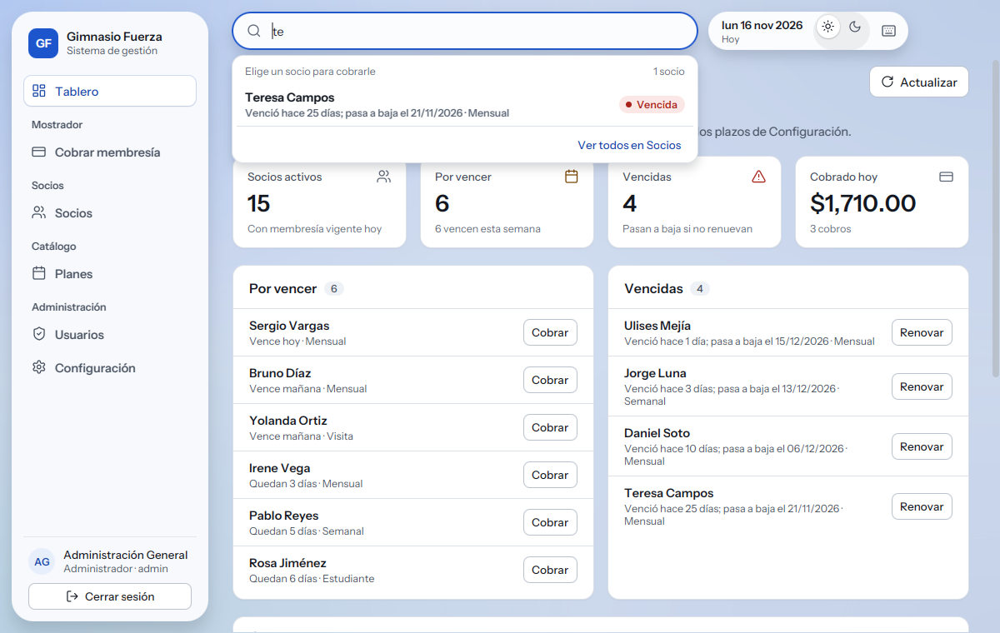
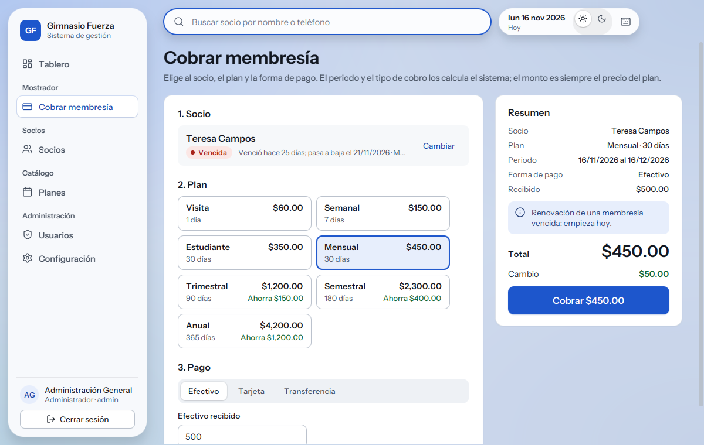
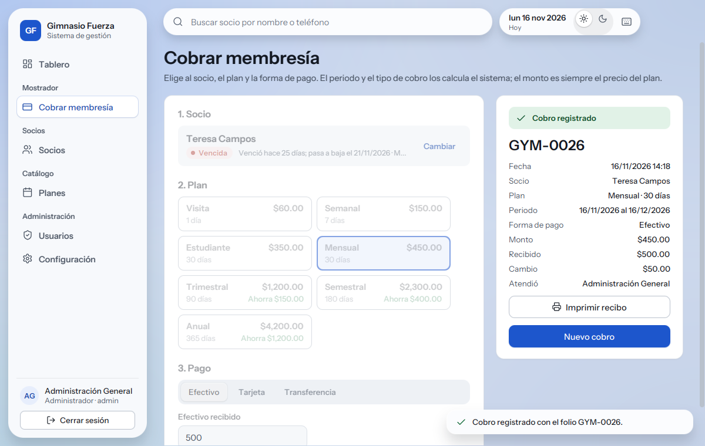
| Entradas | La fecha de hoy y los plazos de configuracion (días de aviso y días para la baja). |
|---|---|
| Tablas | socio, la última membresia de cada socio, plan_membresia, pago (cobros de hoy y últimos 8) con su metodo_pago y usuario. |
| Reglas | RN01 para el estado de cada socio; la semana termina el domingo; los ingresos del día se cuentan de las 00:00 a las 24:00 en la hora del equipo. |
| Resultados | Socios activos, por vencer (y cuántos vencen esta semana), vencidos con el día en que pasarán a baja, lo cobrado hoy, las listas para actuar y los últimos cobros. Desde cada socio por vencer o vencido se abre su cobro. |
El estado se calcula en la aplicación con las mismas reglas que la pantalla de Socios, así que el tablero y la lista nunca se contradicen. La función fn_estado_socio de la base aplica la misma regla; la prueba FnEstadoSocioTest comprueba que ambas dan el mismo resultado en 18 casos límite con dos configuraciones distintas (PR24).
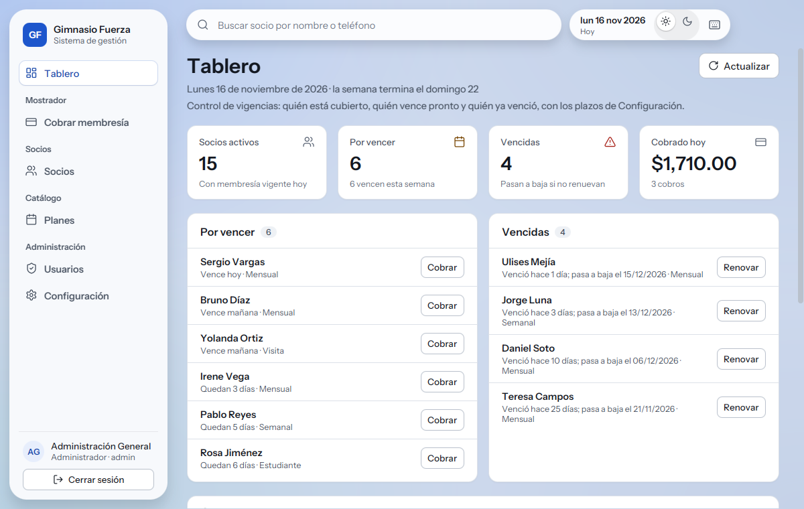
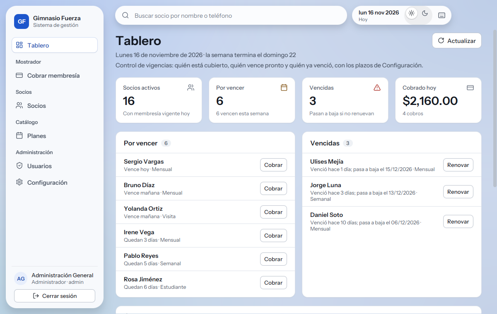
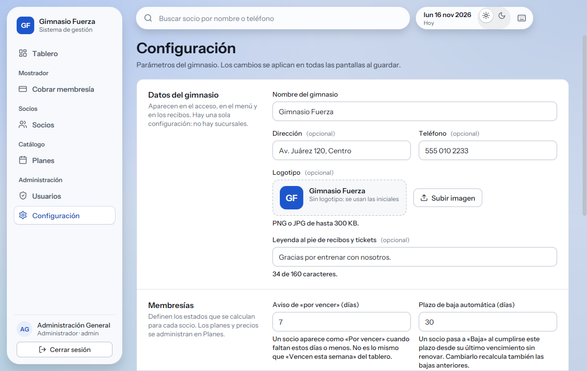
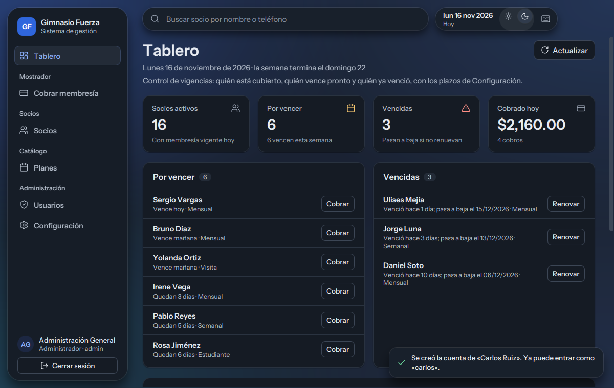
Cada necesidad del sistema se relaciona con el recurso SQL que la resuelve, el archivo donde está y el resultado esperado con 02_datos.sql. El SQL completo y el resultado obtenido de cada consulta están en el Anexo B; los de las funciones, el procedimiento y el trigger, en los Anexos C y D.
| ID | Necesidad | Recurso SQL | Archivo | Resultado esperado |
|---|---|---|---|---|
| Q01 | Buscar socios por parte del nombre | WHERE + ILIKE | 03_consultas.sql | Ana López |
| Q02 | Planes activos en un rango de precio | WHERE + BETWEEN | 03_consultas.sql | Estudiante, Mensual y Trimestral; no la promoción inactiva |
| Q03 | Cobros en efectivo de los últimos 30 días | WHERE + IS NOT NULL + fecha | 03_consultas.sql | Los cobros en efectivo recientes con su cambio |
| Q04 | Usuarios activos de mostrador | WHERE + IN | 03_consultas.sql | Carlos Ruiz y Rocío Méndez; Pedro está inactivo |
| Q05 | Membresías que vencen en 7 días | WHERE + BETWEEN con fechas | 03_consultas.sql | Las de Bruno Díaz e Irene Vega |
| Q06 | Ingresos por mes y tipo de cobro | date_trunc, to_char, COUNT, SUM, ROUND | 03_consultas.sql | Una fila por mes y tipo de cobro |
| Q07 | Antigüedad de cada socio | age, EXTRACT, upper, COALESCE | 03_consultas.sql | Los 12 socios con días y meses inscritos |
| Q08 | Historial de cobros con sus datos relacionados | JOIN de 6 tablas | 03_consultas.sql | 14 cobros con socio, plan, periodo, método y quién cobró |
| Q09 | Ingresos por método de pago | LEFT JOIN + GROUP BY | 03_consultas.sql | 4 métodos; Vales con 0 cobros |
| Q10 | Cobros por usuario | JOIN + GROUP BY | 03_consultas.sql | Ana Martínez, Carlos Ruiz y Rocío Méndez con sus totales |
| Q11 | Socios que nunca han pagado | Subconsulta NOT EXISTS | 03_consultas.sql | Fernando Gil |
| Q12 | Cobros mayores al promedio | Subconsulta escalar con AVG | 03_consultas.sql | El anual (GYM-0001) y el trimestral (GYM-0004) |
| Q13 | Última membresía de cada socio | Subconsulta correlacionada con MAX | 03_consultas.sql | 11 socios con sus días restantes |
| F01 | Calcular el vencimiento de una membresía | Función fn_fecha_vencimiento | 04_funciones.sql | Inicio + 30 días con el plan Mensual |
| F02 | Estado de un socio en una fecha | Función fn_estado_socio | 04_funciones.sql | 6 vigentes, 2 por vencer, 2 vencidos, 1 en baja, 1 sin membresía |
| F03 | Formato del folio | Función fn_formatear_folio | 04_funciones.sql | GYM-0007; GYM-123456 sin cortarse |
| T01 | Los cobros y membresías no se borran | Trigger BEFORE DELETE | 04_funciones.sql | DELETE rechazado con su mensaje |
| P01 | Registrar el cobro de una membresía | Procedimiento sp_registrar_cobro | 05_procedimientos.sql | Pago con el siguiente folio y su membresía; tipo según el estado; la misma operación no cobra dos veces |
| C01–C04 | CRUD de socios, métodos de pago, planes y usuarios | Casos de uso y repositorios con INSERT, SELECT, UPDATE, DELETE | application/usecase/, infrastructure/persistence/ | Operaciones persistidas (Anexo E) y pruebas PR04–PR17 |
| M01 | Cobro de membresías | Transacción con INSERT en pago y membresia; P01 en la base | application/usecase/billing/ | Folio, periodo y recibo (evidencia E1, PR18–PR21) |
| M02 | Control de vigencias | Consultas de membresías y cobros del día; F02 en la base | application/usecase/summary/ | Estados iguales a fn_estado_socio (PR22–PR24) |
Las 13 consultas de 03_consultas.sql responden a necesidades de las pantallas o de los reportes del gimnasio: el buscador de Socios (Q01), las opciones del cobro (Q02), el corte de caja (Q03), el personal de mostrador (Q04), el aviso de «por vencer» del tablero (Q05), los ingresos por mes y por método (Q06, Q09), el historial de cobros de un socio y del recibo (Q08), el desempeño por usuario (Q10) y el seguimiento de socios (Q07, Q11–Q13). Los valores fijos de cada una (textos, montos, días) son los parámetros que la aplicación enviaría. Cada consulta, con su SQL y el resultado que devolvió la base al generar este reporte, está en el Anexo B.
| Recurso | Mínimo | Entregado |
|---|---|---|
Filtros con WHERE | 5 | 5 (Q01–Q05), con ILIKE, BETWEEN, IS NOT NULL, IN y fechas |
| Funciones de PostgreSQL | 2 | 2 (Q06, Q07), con date_trunc, to_char, COUNT, SUM, ROUND, age, EXTRACT, upper y COALESCE |
JOIN | 3 | 3 (Q08–Q10), uno de 6 tablas y un LEFT JOIN |
| Subconsultas | 2 | 3 (Q11–Q13): NOT EXISTS, escalar y correlacionada |
| Procedimiento almacenado | 1 | 1 (P01) |
| Funciones definidas por el usuario | 2 | 3 (F01–F03) y la función del trigger |
| ID | Firma | Necesidad | Resultado |
|---|---|---|---|
| F01 | fn_fecha_vencimiento(p_inicio date, p_plan_id bigint) RETURNS date | Calcular hasta cuándo dura una membresía. | Inicio + duración del plan. |
| F02 | fn_estado_socio(p_socio_id bigint, p_fecha date DEFAULT CURRENT_DATE) RETURNS varchar | Saber el estado de un socio en una fecha, con los plazos de la configuración (RN01). | SIN_MEMBRESIA, VIGENTE, POR_VENCER, VENCIDA o BAJA. |
| F03 | fn_formatear_folio(p_prefijo varchar, p_numero bigint, p_ancho integer) RETURNS varchar | Escribir el folio de un cobro. | GYM-0007; un número más largo no se corta. |
F02 es la más usada: la llaman las consultas de seguimiento y el procedimiento P01 para decidir el tipo de cobro. Su código:
CREATE OR REPLACE FUNCTION fn_estado_socio(p_socio_id bigint, p_fecha date DEFAULT CURRENT_DATE)
RETURNS varchar LANGUAGE plpgsql STABLE AS $$
DECLARE
v_vencimiento date; v_aviso integer; v_baja integer; v_dias integer;
BEGIN
SELECT MAX(fecha_vencimiento) INTO v_vencimiento FROM membresia WHERE socio_id = p_socio_id;
IF v_vencimiento IS NULL THEN
RETURN 'SIN_MEMBRESIA';
END IF;
SELECT dias_aviso, dias_baja_automatica INTO v_aviso, v_baja FROM configuracion WHERE id = 1;
v_dias := v_vencimiento - p_fecha;
IF v_dias >= 0 THEN
RETURN CASE WHEN v_dias <= v_aviso THEN 'POR_VENCER' ELSE 'VIGENTE' END;
END IF;
RETURN CASE WHEN -v_dias >= v_baja THEN 'BAJA' ELSE 'VENCIDA' END;
END;
$$;sp_registrar_cobro (sql/05_procedimientos.sql) registra un cobro completo dentro de la base, con las mismas reglas que el módulo M01:
CALL sp_registrar_cobro(p_socio_id, p_plan_id, p_metodo_pago_id, p_usuario_id,
p_efectivo numeric, p_operacion varchar, p_inicio date,
INOUT p_pago_id bigint, INOUT p_folio varchar);SELECT … FOR UPDATE) y valida que exista, que el plan y el método estén activos y que el efectivo cubra el precio (RN06, RN07).fn_estado_socio decide el tipo de cobro y el inicio (RN03, RN04); calcula el vencimiento con fn_fecha_vencimiento.UPDATE folio_secuencia … RETURNING, que bloquea esa fila hasta terminar la transacción, y lo escribe con fn_formatear_folio (RN08).pago y su membresia y devuelve el id y el folio.El código completo está en el Anexo C y su ejecución con los datos de prueba (una primera membresía, una renovación anticipada y una operación repetida), en el Anexo D.
fn_impedir_borrado() es una función de trigger que lanza una excepción; los triggers trg_pago_sin_borrado y trg_membresia_sin_borrado la ejecutan BEFORE DELETE en pago y membresia (RN10). En el Anexo D se ve el rechazo de DELETE FROM pago.
Las funciones, el procedimiento y los triggers forman parte de la base de la aplicación: la migración V6 los instala al arrancar. Los triggers protegen todo lo que la aplicación guarda. El cobro de la aplicación está escrito en Java (ChargeMembership) para mostrar la vista previa, los errores en cada campo y el recibo; aplica las mismas reglas que sp_registrar_cobro, y las pruebas comprueban que el estado calculado por la aplicación coincide con fn_estado_socio (PR24).
El proyecto tiene pruebas por capa con JUnit 5. Las de persistencia levantan su propio PostgreSQL 16 con Testcontainers, aplican las migraciones y prueban cada repositorio contra la base real; las de la interfaz abren las pantallas y revisan el teclado. ./mvnw test ejecuta 678; los 15 recorridos de pantalla (CapturasUiTest) se agregan con -Dui.capturas=true porque necesitan pantalla.
| Capa | Qué prueban | Pruebas | Fallos |
|---|---|---|---|
| Dominio | Reglas puras: estados, inicio de la vigencia, ahorro, dinero, folios, roles | 181 | 0 |
| Aplicación | Casos de uso con repositorios en memoria: validaciones, permisos y mensajes | 214 | 0 |
| Infraestructura | Repositorios, migraciones, scripts SQL, funciones y procedimiento contra PostgreSQL 16 | 135 | 0 |
| Interfaz | ViewModels y navegación por rol (148) y recorridos de pantalla con teclado (15) | 163 | 0 |
| Total | 693 | 0 | |
ReporteCapturasTest, el recorrido de las capturas de este reporte sobre PostgreSQL, corre aparte con -Dreporte.capturas=true.
| ID | Operación | Datos utilizados | Resultado esperado | Resultado obtenido | Estado |
|---|---|---|---|---|---|
| PR01 | Iniciar sesión | Usuario admin y su contraseña | Entra con las 6 secciones del administrador | Entró con Tablero, Cobrar, Socios, Planes, Usuarios y Configuración | Cumple |
| PR02 | Iniciar sesión con datos incorrectos | Contraseña equivocada; usuario inexistente | Mismo mensaje en ambos casos | «Usuario o contraseña incorrectos. Revísalos e inténtalo de nuevo.» | Cumple |
| PR03 | Menú por rol | Cuenta carlos con rol Caja | Solo Cobrar membresía y Socios | Figura 5 | Cumple |
| PR04 | C01 Registrar socio | Laura Medina, «555 120 3456», laura.medina@correo.mx | Fila en socio con el teléfono sin espacios y alta de hoy | Evidencia E3: teléfono 5551203456, alta de hoy | Cumple |
| PR05 | C01 Registrar con errores | Nombre vacío, teléfono de 9 dígitos, correo «no-es-correo» | Tres mensajes, cada uno en su campo; no se guarda | «Escribe el nombre completo.», «El teléfono debe tener 10 dígitos; tiene 9…», «Escribe un correo válido…» | Cumple |
| PR06 | C01 Consultar | Búsqueda «ana lopez» sin acentos | Encuentra a Ana López | «Mostrando 1 de 24 socios.» (Figura 8) | Cumple |
| PR07 | C01 Modificar | Ana López → Ana María López, otro teléfono | Se guardan los datos y conserva su membresía | Guardado; sigue Vigente con su plan Mensual | Cumple |
| PR08 | C01 Eliminar con cobros | Ana López | Se rechaza y su historial se conserva | «No puedes eliminar a «Ana López»: ya tiene cobros registrados y su historial se conserva.» (Figura 8) | Cumple |
| PR09 | C01 Eliminar sin cobros | Socio recién registrado | Se borra | Borrado de socio | Cumple |
| PR10 | C02 Agregar método repetido | «efectivo» cuando ya existe «Efectivo» | Error en el nombre, sin distinguir mayúsculas | «Ya existe uno con ese nombre.» | Cumple |
| PR11 | C02 Eliminar un método usado | Efectivo, con cobros | Se rechaza y sugiere desactivarlo | «…ya se usó en cobros. Desactívalo para dejar de ofrecerlo.» | Cumple |
| PR12 | C03 Agregar plan | Bimestral, 60 días, $850.00, referencia Mensual | Plan activo; ahorro de $50.00 (6%) | Evidencia E4 y Figura 11 | Cumple |
| PR13 | C03 Eliminar plan con membresías | Mensual | Se rechaza y sugiere desactivarlo | «No puedes eliminar «Mensual»: ya tiene membresías. Desactívalo para dejar de ofrecerlo.» | Cumple |
| PR14 | C03 Desactivar la referencia | Mensual, referencia de 4 planes | Deja de ofrecerse; el ahorro de los otros ya no se calcula | Los 4 planes muestran «No disponible» | Cumple |
| PR15 | C04 Agregar cuenta | Carlos Ruiz, carlos, Caja, contraseña de 36 caracteres | Fila con hash Argon2id; la cuenta entra con el menú de Caja | Evidencia E5 ($argon2id$…) y Figura 5 | Cumple |
| PR16 | C04 Desactivarse a sí mismo | La cuenta con la que se entró | Se rechaza | «No puedes desactivar tu propio usuario mientras lo usas.» | Cumple |
| PR17 | C04 Quitar el último administrador | Único administrador activo, cambio de rol | Se rechaza | «Debe quedar al menos un administrador activo.» | Cumple |
| PR18 | M01 Cobro de una membresía vencida | Teresa Campos (vencida hace 25 días), Mensual, efectivo $500.00 | Renovación vencida que empieza hoy, siguiente folio, cambio $50.00 | Evidencia E1: GYM-0026, renovacion_vencida, de hoy a +30 días; Figura 16 | Cumple |
| PR19 | M01 Efectivo insuficiente | $300.00 para un plan de $450.00 | No deja cobrar y dice cuánto falta | «Faltan $150.00»; «Cobrar» deshabilitado; ningún pago | Cumple |
| PR20 | M01 Doble envío | Dos clics en «Cobrar» con la misma operación | Un solo pago | 1 fila en pago | Cumple |
| PR21 | M01 Renovación anticipada | Socio con 5 días de vigencia | La nueva empieza al terminar la actual | Inicio = hoy + 5; vencimiento = hoy + 35 | Cumple |
| PR22 | M02 Tablero | Datos de demostración | 15 activos, 6 por vencer, 4 vencidos, $1,710.00 hoy | Figura 17 | Cumple |
| PR23 | M02 Después de un cobro | Cobro de PR18 | Una vencida menos y el cobro en los ingresos de hoy | 3 vencidas y $2,160.00 (Figura 18) | Cumple |
| PR24 | M02 Estado de la app = fn_estado_socio | 18 vencimientos límite con 7/30 y 3/10 días | El mismo estado en todos | Iguales en los 36 casos (FnEstadoSocioTest) | Cumple |
| PR25 | Q01–Q13 | 02_datos.sql | Lo indicado en la matriz (Tabla 15) | Anexo B | Cumple |
| PR26 | F01, F02 y F03 | 06_pruebas.sql | Vencimiento a 30 días; estados de la matriz; GYM-0007 y GYM-123456 | Anexo D | Cumple |
| PR27 | P01 | Primera de Fernando Gil, anticipada de Bruno Díaz y la misma operación repetida | Dos cobros nuevos; el repetido devuelve el primer folio | Anexo D | Cumple |
| PR28 | T01 | DELETE FROM pago WHERE folio = 'GYM-0001' | Rechazado | Anexo D: «Los registros de pago no se borran…» | Cumple |
| PR29 | Scripts y migraciones | Base de los scripts y base de la app | Mismo esquema, funciones y triggers | Iguales (SqlScriptsTest) | Cumple |
| PR30 | Sin conexión | PostgreSQL apagado | La app explica la causa y permite reintentar | Figura 3 | Cumple |
Después de cada operación de las capturas, la prueba consultó PostgreSQL y guardó el resultado (Anexo E): el cobro de la Figura 16 con su membresía (E1), el estado de la socia con fn_estado_socio (E2), el socio, el plan y la cuenta creados desde las pantallas (E3–E5) y el total de socios por estado al final (E6). Así se comprueba que lo que muestra la aplicación es lo que quedó en la base.
| Software | Versión | Para qué |
|---|---|---|
| JDK | 25 o posterior | Compilar y ejecutar la aplicación (Maven llega con el proyecto: ./mvnw). |
| Docker con Docker Compose | Reciente | PostgreSQL 16 de la aplicación y de las pruebas. |
PostgreSQL 16 con psql | Opcional | Solo si se prefiere un PostgreSQL instalado en lugar de Docker. |
| Git | Cualquiera | Obtener el código. |
Las demás dependencias (JavaFX, controlador de PostgreSQL, HikariCP, JDBI, Flyway, Argon2) las descarga Maven la primera vez.
git clone https://github.com/sizdr/gym-desk.git
cd gym-desk
cp .env.example .env # en Windows: copy .env.example .envEn .env se escribe la contraseña de la base en DB_PASSWORD. La primera vez, también ADMIN_NAME, ADMIN_USERNAME y ADMIN_PASSWORD (8 caracteres o más): con ellos la aplicación crea el primer administrador si la base no tiene usuarios. DB_URL y DB_USER ya valen jdbc:postgresql://localhost:5432/gimnasio y gimnasio.
docker compose up -dCrea la base gimnasio con el usuario y la contraseña del .env. La contraseña queda fija la primera vez que se crea el volumen.
En Linux o macOS, con el PostgreSQL de Docker:
sql/crear-base.shEn cualquier sistema (también Windows) con psql, en este orden:
createdb -U gimnasio gimnasio_proyecto
psql -U gimnasio -d gimnasio_proyecto -v ON_ERROR_STOP=1 -f sql/01_esquema.sql
psql -U gimnasio -d gimnasio_proyecto -v ON_ERROR_STOP=1 -f sql/02_datos.sql
psql -U gimnasio -d gimnasio_proyecto -v ON_ERROR_STOP=1 -f sql/03_consultas.sql
psql -U gimnasio -d gimnasio_proyecto -v ON_ERROR_STOP=1 -f sql/04_funciones.sql
psql -U gimnasio -d gimnasio_proyecto -v ON_ERROR_STOP=1 -f sql/05_procedimientos.sql
psql -U gimnasio -d gimnasio_proyecto -v ON_ERROR_STOP=1 -f sql/06_pruebas.sqlCon el PostgreSQL de Docker, cada línea se antepone con docker compose exec -T db y el archivo se pasa por la entrada estándar (< sql/01_esquema.sql). La base gimnasio_proyecto queda aparte de la de la aplicación.
./mvnw javafx:run # en Windows: mvnw.cmd javafx:runAl arrancar, la aplicación crea o actualiza su base con las migraciones y abre la pantalla de acceso. Para la demostración con datos, scripts/demo/crear-demo.sh crea la base gimnasio_demo (pide las cuentas al correrlo) y basta con poner en el .env DB_URL=jdbc:postgresql://localhost:5432/gimnasio_demo. Para volver a la base de trabajo se quita esa línea.
./mvnw test # 678 pruebas; las de persistencia necesitan Docker
./mvnw test -Dui.capturas=true # las 693, con los 15 recorridos de pantalla
./mvnw test -Dtest=ReporteCapturasTest -Dreporte.capturas=true # capturas de este reporte
scripts/docs/reporte/generar-reporte.sh # vuelve a generar este PDFGym Desk cumple el alcance planteado: una base relacional de 8 tablas en tercera forma normal, con todas las restricciones de integridad pedidas; cuatro catálogos con CRUD completo y persistente (uno más de los tres requeridos); dos módulos integradores que relacionan socios, planes, métodos, usuarios, pagos y membresías; 13 consultas, 3 funciones propias, 1 procedimiento y 1 trigger documentados en la matriz de evidencias; y 693 pruebas automatizadas sin fallos. Las reglas del negocio se aplican en un solo lugar de la aplicación y, donde corresponde, también en la base, de modo que ni un error de programación ni un acceso directo a PostgreSQL pueden dejar datos inconsistentes.
Como equipo, el proyecto mostró que las decisiones del modelo se ven después en todo el sistema: no guardar el estado del socio evitó procesos programados y contradicciones entre pantallas; la clave foránea compuesta impidió una clase completa de errores; y escribir las consultas a mano obligó a entender cada JOIN y cada filtro.
sp_registrar_cobro: implementa el mismo cobro en Java para dar la vista previa y los errores por campo. Ambos caminos se mantienen alineados con pruebas, pero son dos implementaciones.crear-base.sh, crear-demo.sh) son de bash; en Windows se sigue el camino manual con psql (sección 10.4).docs/contratos.md).Resultado de ejecutar cada consulta de sql/03_consultas.sql sobre la base de los scripts con 02_datos.sql, al generar este reporte. Las fechas son relativas al día de la ejecución.
Salida de psql al ejecutar sql/06_pruebas.sql sobre la base de los scripts (los avisos NOTICE los escribe el procedimiento), seguida del intento de borrar un cobro.
Consultas que hizo ReporteCapturasTest a PostgreSQL después de cada operación hecha en las pantallas de la sección 7. Se numeran E1 a E6 en el orden en que aparecen.